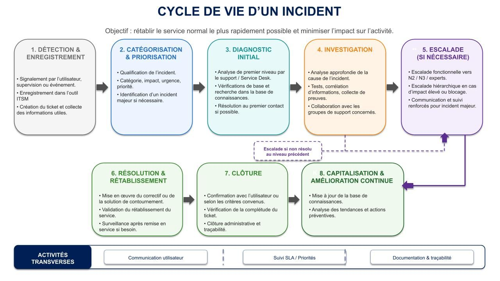

Entreprise · Crédit Municipal de Paris
Support utilisateur et gestion des incidents (ITSM)
Point d'entrée de la DSI : qualifier, traiter ou escalader chaque ticket en gardant le service bancaire disponible.
- GLPI
- ITIL 4
- Gestion des incidents
- Escalade N2
Contexte
Au centre de service du Crédit Municipal de Paris, je suis le point d'entrée des sollicitations adressées à la DSI. Je traite les incidents de niveaux 1 et 2, puis j'escalade vers les administrateurs ou les développeurs quand c'est nécessaire.
Résultat
Meilleure efficacité du niveau 2 grâce à des tickets complets, aucun blocage prolongé du front office, et un backlog qui diminue grâce à un suivi quotidien.
Étapes de réalisation
- Qualification. Requalifier le ticket ouvert sur le portail libre-service de GLPI : priorité (impact et urgence), type (incident ou demande) et catégorie.
- Traitement. Résoudre avec une solution connue, ou faire les premiers tests et prises d'information utiles au niveau 2.
- Enrichissement. Pour les tickets destinés aux administrateurs ou aux développeurs : logs, captures d'écran et contexte, avant l'escalade.
- Priorisation. Front office d'abord pour ne pas bloquer l'activité bancaire, puis backlog par criticité réelle.
- Traçabilité. Documenter chaque étape de vie du ticket, pour un suivi rigoureux entre les services.
Captures

Difficultés rencontrées
- Gérer les « faux critiques » avec diplomatie, en expliquant la priorité tout en garantissant un délai raisonnable.
- Comprendre que la précision des informations notées au niveau 1 conditionne la rapidité du traitement par les niveaux supérieurs.
- Arbitrer entre urgences du front office et backlog de fond.
Technologies utilisées
- Cycle de vie d'un ticket (ITIL)
- Analyse et synthèse technique
- Gestion des priorités en production
- Communication inter-services